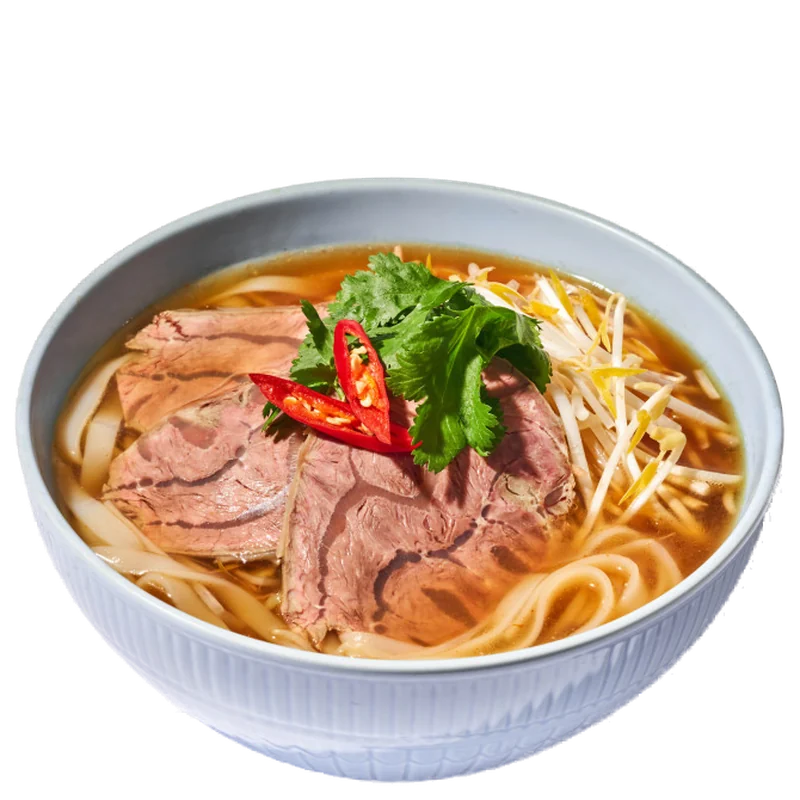
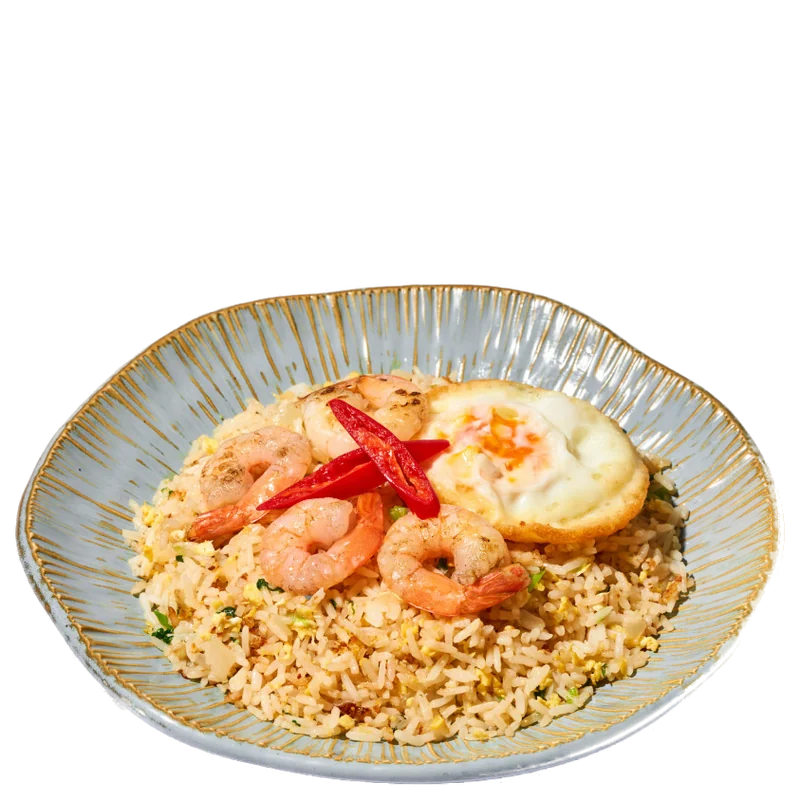
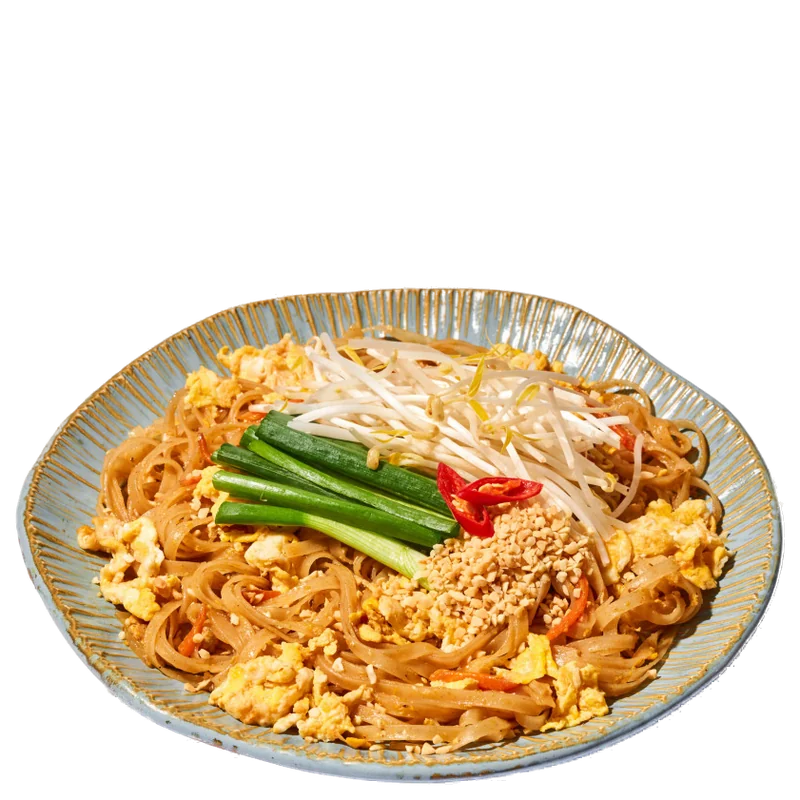
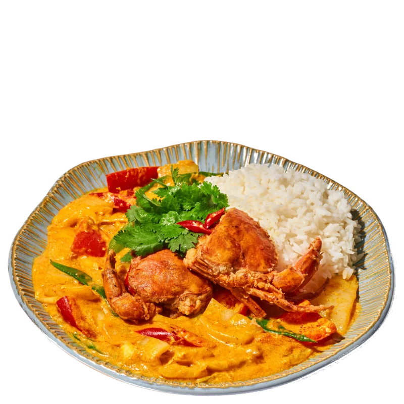
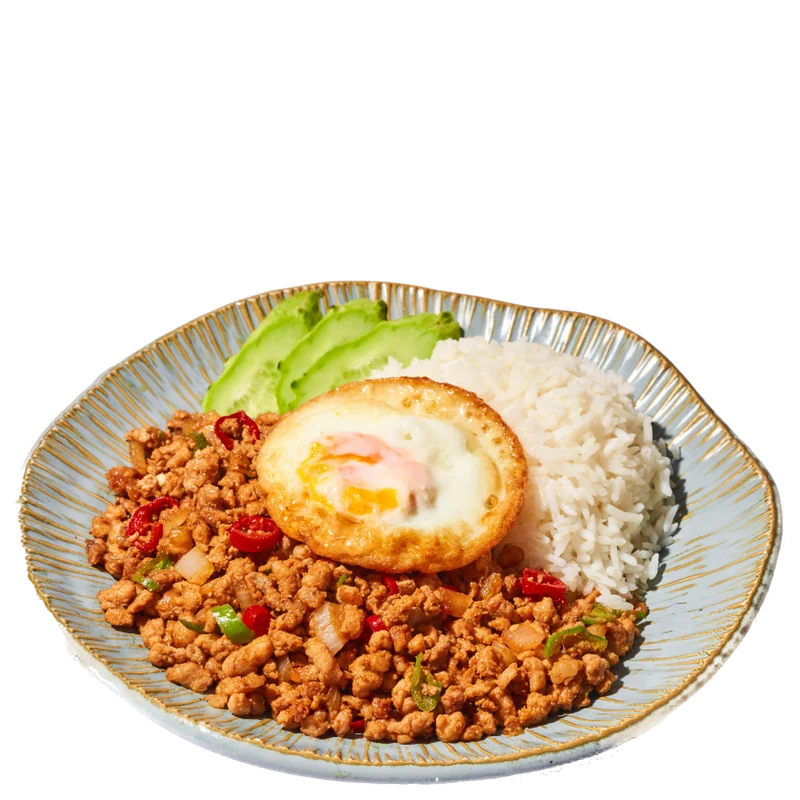
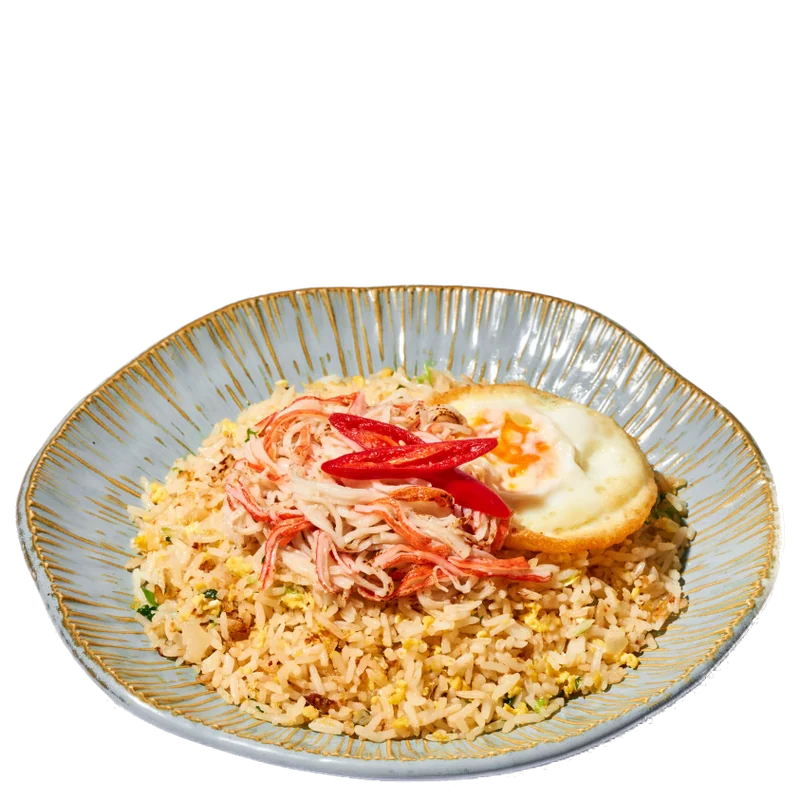
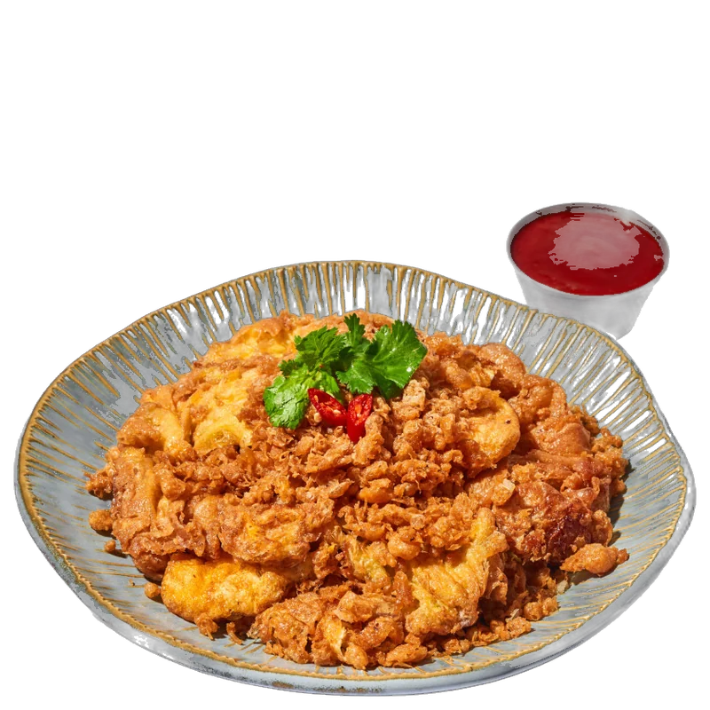
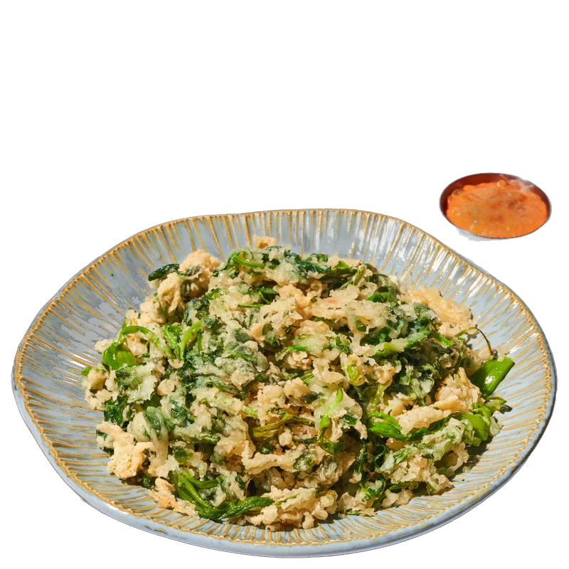
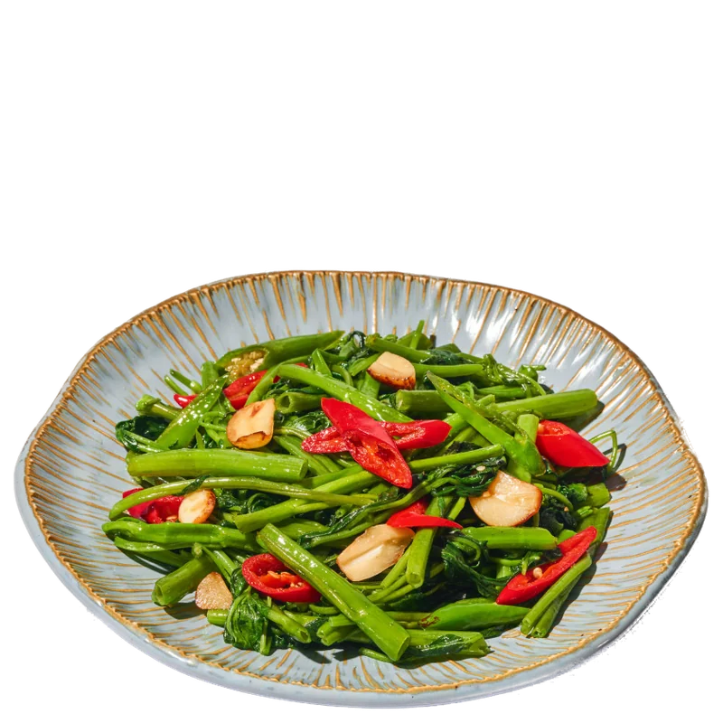
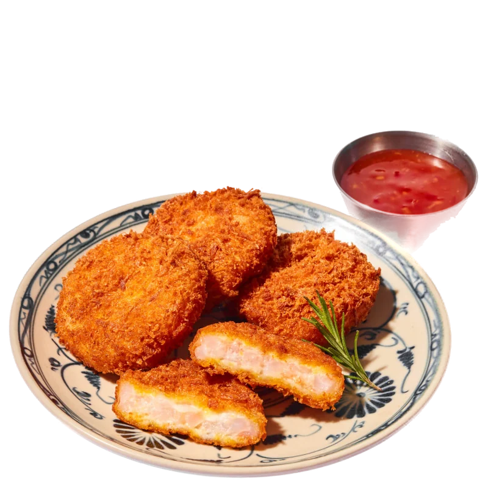

STORY · เรื่องราว
찡짜이,
진심이라는 이름
태국에서는 꾸밈없고 믿을 수 있는 사람을 ‘찡짜이’하다고 말해요. 저희는 손님 앞에 내놓는 한 그릇이 그 말에 어울리길 바랍니다.
- 소스피시소스·타마린드·팜슈가, 태국 재료로 맛을 냅니다.
- 허브바질·레몬그라스·고수는 그날그날 손질해요.
- 불맛주문이 들어오면 그때 웍에 볶습니다.
จริงใจ 찡짜이는 태국말로 ‘진심’










오늘 11:00 – 21:00 · 브레이크 15:00 – 17:00
REVIEW · รีวิว
여자친구의 적극추천으로 같이 방문하였습니다. … 다 맛있었지만 개인적으로 새우볶음밥과 똠얌쌀국수가 좋았습니다. 광화문에 태국이 절로 생각나는 맛집이 생긴거 같아서 너무 좋습니다.
오늘 오랜만에 타이푸드가 땡겨서 찾다가 동네에서 가까운 찡짜이타이푸드에 다녀왔는데 매장도 인테리어도 넘 예쁘고 음식도 하나같이 다 맛있어서 단골 예정이에요..! … 다음엔 쌀국수도 먹어볼게요
광화문에서 태국 현지맛을 제대로 느낄 수 있는 곳! 푸팟퐁커리를 1인분으로 먹을 수도 있어서 더 좋은곳! 가격도 합리적이라서 자주 올 것 같습니다 … 팟타이랑 푸팟퐁커리는 계속 생각나는 맛이에요! 추천합니다!
굉장히 맛있게 먹었습니다. 특히 푸팟퐁커리가 맨 첫 번째 메뉴여서 그런지 엄청 맛있고 쌀도 그 동남아 현지쌀밥같아서 더 좋았어요!
네이버 방문자 리뷰에서 일부를 그대로 옮겼어요.
네이버 리뷰 더 보기STORY · เรื่องราว
태국에서는 꾸밈없고 믿을 수 있는 사람을 ‘찡짜이’하다고 말해요. 저희는 손님 앞에 내놓는 한 그릇이 그 말에 어울리길 바랍니다.
| 주소 | (주소 입력) |
|---|---|
| 영업 | 11:00 – 21:00 |
| 브레이크 | 15:00 – 17:00 |
| 라스트오더 | 20:30 |
| 휴무 | 매주 월요일 |
※ 영업시간·휴무는 사장님 확인 후 교체 예정